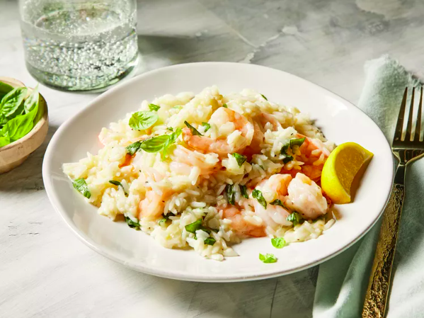

Home
Shrimp and Rice

Description
This egg salad recipe is the best and easy to make with chopped boiled eggs, mayonnaise, mustard, and green onions for some color and crunch. It tastes wonderful in a sandwich and will definitely be devoured at picnics! It's really good on rye.
Ingredients
- 5 tablespoons unsalted butter, divided
- 1 yellow onion, finely chopped
- 6 cloves garlic, finely chopped
- 1/4 cup dry white wine
- 2 cups chicken stock
- 2 teaspoons lemon zest
- 1 1/2 teaspoons kosher salt
- 1/4 teaspoon freshly ground black pepper
- 1 1/2 cups uncooked jasmine rice, rinsed
- 1 pound medium peeled, deveined raw shrimp
- 1 tablespoon freshly squeezed lemon juice
- 1/2 cup freshly grated Parmesan cheese
- 2 tablespoons finely chopped fresh basil, plus small leaves for garnish
- lemon wedges for serving
Steps
- Gather all ingredients.
- Melt 1 tablespoon butter in a large nonstick skillet over medium. Add onion, and cook, stirring occasionally, until soft and translucent, about 3 minutes. Add garlic, and cook, stirring constantly, until garlic is fragrant and onions are lightly browned, about 1 minute. Stir in wine, and cook, stirring occasionally, until wine is reduced by half, about 3 minutes.
- Stir in chicken stock, lemon zest, salt, and black pepper. Bring to a boil over medium, and stir in rice. Cover and reduce heat to low. Simmer, undisturbed, until rice is just cooked through, 9 to 10 minutes. Add shrimp to rice in an even layer; drizzle with lemon juice, and dot with remaining 4 tablespoons butter. Cover and continue to cook over medium until shrimp and rice are cooked through, 5 to 6 minutes.
- Remove from heat. Stir in Parmesan cheese and basil. Garnish with lemon wedges and basil leaves.